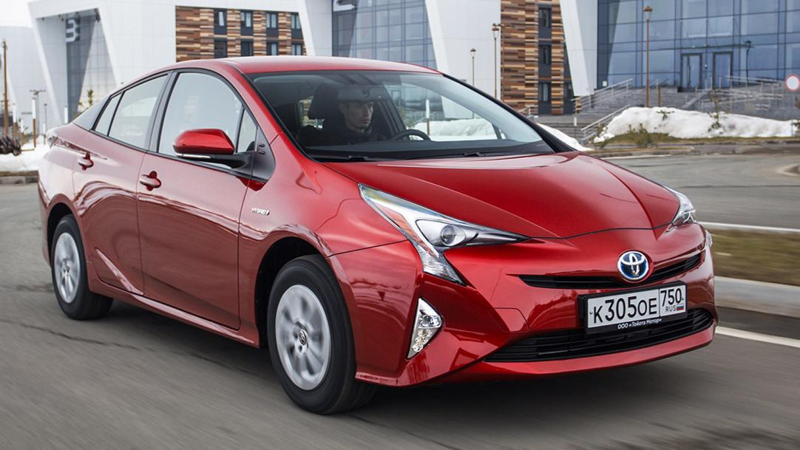

|
В мире существует два основных вида гибридных автомобилей: параллельные и серийные. Первый имеет как двигатель
внутреннего сгорания, так и батареи для электромотора. Автомобилем управляет небольшой бензиновый двигатель и когда требуется
дополнительная мощность — подключается электрический. Такая система необходима для увеличения скорости.
У серийных гибридов, с другой стороны, имеется генератор, который приводится в действие двигателем внутреннего сгорания. Этот
генератор заряжает батареи и затем дает мощность электромотору. Бензиновый двигатель не может завести автомобиль самостоятельно.
Это может случиться, если вы захотите завести ваше авто именно так. Все остальное время машина заводится с помощью электродвигателя.
Пробег вашего автомобиля и дальность покрытого им расстояния будет лучше, если большую часть времени вы ездите на электричестве.
Расход топлива в гибридных автомобилях ниже, чем в обычных машинах. Они экономнее потребляют бензин, тем самым увеличивая свой пробег на 20 - 30 миль на 1 галлон.
Также в гибридных автомобилях автоматически отключается двигатель, когда вы останавливаетесь. Выжимая педаль газа, вы его включаете. Таким образом, экономится довольно много топлива. Двигатель внутреннего сгорания также начинает заряжать батареи самостоятельно, когда у них низкий уровень мощности.
|

|